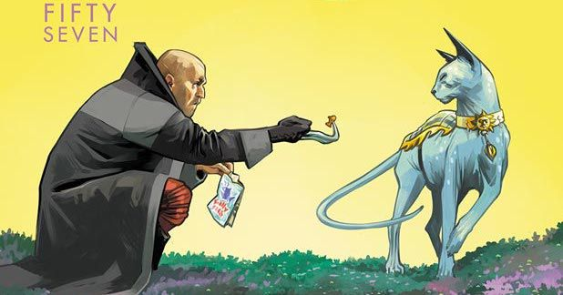

Saga: Integral 1
Image comics nos trae otra obra maestra del cómic de la manos de Brian K. Vaughan, con Fiona Staples ilustrando.
La editorial Image Comics es hoy en día una de las mejor valoradas por sus lectores, y eso es gracias a la alta calidad de un buen número de los títulos que tienen a la venta. Posiblemente la política de libertad creativa que esta factoría de cómics tiene con sus autores tenga gran parte de la culpa de este éxito, y Saga es uno de los mejores ejemplos (junto a otros como The Walking Dead o Invencible) de que la cosa funciona realmente bien. Después de arrasar en ventas en nuestro país a lo largo de nueve entregas, ahora Planeta Cómic ha decidido concederle a esta serie una edición de lujo, y por fin podemos tener el primero de sus volúmenes en nuestras manos…
Romeo y Julieta en el espacio
Alana y Marko son amantes, pero su amor está prohibido. Pertenecen a dos razas en guerra, como si uno fuera un Capuleto y el otro un Montesco. Aún así, superando las barreras sociales y también las biológicas, han logrado engendrar un bebé, y nuestra historia comienza exactamente en el momento en el que Alana sufre todos los dolores del mundo mientras ese ser que ha crecido en su interior atraviesa ahora su carne para tomar su primera bocanada de aire. No, no se trata de uno de esos partos de película de Disney en los que todo sucede en silencio y armonía, más bien es todo lo contrario. Algo que sus autores nos van a dejar muy claro desde el principio en Saga es que, independientemente de lo que pudiera parecer por su planteamiento inicial, esta fantasía espacial no tiene nada de cuento de hadas. Saga es, a pesar de estar plagada de seres como arañas antropomórficas, gatos polígrafo, monarcas robóticos y sátiros alados, realidad pura y sin filtros, hasta el punto de haber sufrido en ocasiones la ira de los censores…

Ahora que su hija Hazel ha nacido, dado el peligro que supone la existencia de una familia así, ha llegado el momento de huir de la gente de sus respectivas razas, la de la tecnológicamente avanzada Coalición de Terravista, el planeta más grande de la galaxia, y la de Guirnalda, su único satélite. En su odisea espacial nuestros protagonistas se van a encontrar con un montón de personajes (importante destacar al Príncipe Robot IV, a la niñera fantasma Izabel o al cazarrecompensas La Voluntad) de lo más estrambótico que o bien les ayudarán o bien harán lo posible por complicar su vida, pero todos ellos causarán una importante impresión en el lector. Y es que si Saga ha sido uno de los cómics más premiados en la historia del noveno arte no ha sido por casualidad.
Space opera con formato de soap opera
El trabajo de Brian K. Vaughan a la hora de componer esta epopeya galáctica y estos personajes es sencillamente magistral. Parece obvio que su experiencia como padre ha sido una influencia realmente fuerte a la hora de trabajar en estos guiones, y es notorio que el autor se esfuerza por reflejar de forma franca su experiencia aquí. Quizás uno de sus mayores aciertos en esta obra sea el de introducir una voz en off narrativa, la de una Hazel ya crecida, que utiliza de manera no redundante para relatar en paralelo con lo que vemos en viñetas tanto lo que está sucediendo como lo que va a suceder en un futuro cercano, proporcionando de esta forma al lector potentes cliffhangers cada cierto tiempo.
Pero cuando Saga realmente llega al corazón del lector es cuando sus personajes se ven obligados a tomar decisiones que no hubiéramos esperado de ellos o cuando el destino les depara algo que no han podido anticipar. Resulta increíble la capacidad de esta historia para emocionar, utilizando en gran medida muchos de los recursos facilones de un culebrón transformados a través del prisma del señor Vaughan.